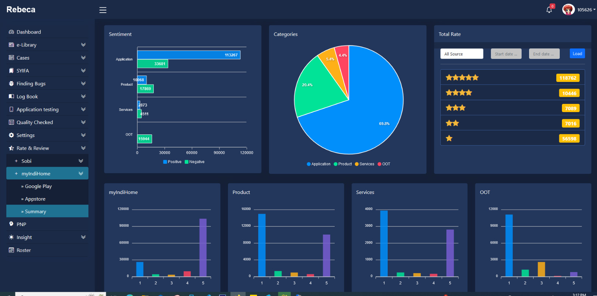
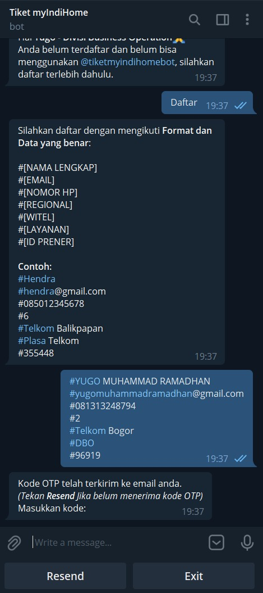
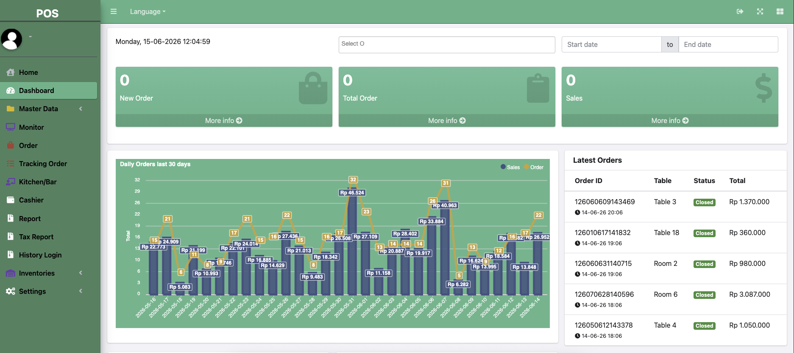

Professional Summary
Experienced Web Developer with over 5 years of demonstrated history in designing, developing, and deploying high-quality, responsive web applications. Expert in leveraging PHP frameworks like Laravel and Yii to deliver clean backend logic and seamless customer experiences.
Education
GPA: 3.17 / 4.00
Work Experience
- Resolved critical application issues for operational lines to preserve flawless technical workflows.
- Coordinated directly with core development teams to execute application maintenance and bug debugging.
- Developed and meticulously maintained business-critical operational systems utilized daily by agent workgroups.
- Executed systematic code troubleshooting and code deployments in synchronization with senior developers.
Professional Skills
Languages & Tech
Frameworks
Databases & Server

REBECA (Report Backend Case) Web Application
This work assignment was an individual project where I was fully responsible for developing REBECA, a robust backend case management system engineered using the Yii2 framework and MySQL database. Serving as the primary developer, I designed the platform to log customer broadband issues, facilitate cross-team technical coordination, and implement a fair, automated ticket distribution algorithm among agents.

Telegram Bot Integration for REBECA
Initiated as an official work assignment, this individual project focused on developing and integrating an automated Telegram Bot into the existing REBECA ecosystem utilizing Yii2 and MySQL. I solely architected the bot to enable instant, non-ticketing customer incident reporting, which bypasses traditional queues to significantly accelerate service-level agreements (SLAs).

XENA — Automated Ticket Distribution System
XENA is an official work assignment that I engineered individually as a next-generation web application utilizing Laravel 9 and a PostgreSQL 15 database. The system was purposefully designed to ingest high-volume customer ticket streams from ETL processes and external REST APIs, automatically distributing them to available agents using an equitable routing logic.

Real-Time Distributed POS (Point of Sale) System
This project was a self-initiated freelance assignment where I acted as the sole developer to design and deploy a comprehensive POS system for a Korean restaurant chain in Jakarta. I developed a multi-tenant, distributed architecture using the Yii2 framework and MySQL to manage multi-branch operations, employee access controls, dynamic menus, and live inventory tracking.